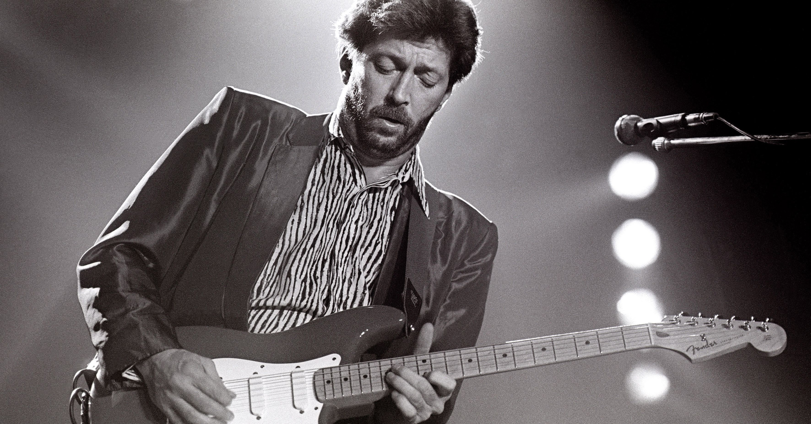

|  | |
| Name | Eric Patrick Clapton |
|---|---|
| Born | 30 March 1945 (age 76) Ripley, Surrey, England |
| Occupation | Musician, Singer, Songwriter, Record Producer |
| Years Active | 1962-present |
| Spouse(s) | Patttie Boyd(m. 1979; div. 1989), Melia McEnery(m. 2002) |
| Children | 5 |
| Genres | Rock, Blues |
| Instruments | Guitar, Vocals |
Description
Early Life
Clapton was born on 30 March 1945 in Ripley, Surrey, England, to 16-year-old Patricia Molly Clapton (7 January 1929-March 1999) and Edward Walter Fryer (21 March 1920-15 May 1985), a 25-year-old soldier from Montreal, Quebec.Fryer was drafted to war before Clapton's birth and then returned to Canada. Clapton grew up believing that his grandmother, Rose, and her second husband, Jack Clapp, Patricia's stepfather, were his parents, and that his mother was actually his older sister.Clapton received an acoustic Hoyer guitar, made in Germany, for his thirteenth birthday, but the inexpensive steel-stringed instrument was difficult to play and he briefly lost interest.Two years later he picked it up again and started playing consistently.Clapton was influenced by blues music from an early age, and practised long hours to learn the chords of blues music by playing along to the records.He preserved his practice sessions using his portable Grundig reel-to-reel tape recorder, listening to them over and over until satisfied.In 1961, after leaving Hollyfield School in Surbiton, Clapton studied at the Kingston College of Art but was expelled at the end of the academic year because his focus had remained on music rather than art.His guitar playing was sufficiently advanced that, by the age of 16, he was getting noticed.In 1962, Clapton started performing as a duo with fellow blues enthusiast Dave Brock in pubs around Surrey.When he was 17 years old, Clapton joined his first band, an early British R&B group, the Roosters.
Musical Career
October 1963, Clapton joined the Yardbirds, a blues-influenced rock and roll band, and stayed with them until March 1965.Clapton joined John Mayall & the Bluesbreakers in April 1965, only to quit a few months later.Clapton left the Bluesbreakers in July 1966and was invited by drummer Ginger Baker to play in his newly formed band CreamClapton's next group, Blind Faith, formed in 1969.The supergroup debuted before 100,000 fans in London's Hyde Park on 7 June 1969.
Albums
List of Albums
| Year | Album | Producers |
|---|---|---|
| November-9,1970 | Layla and Other Assorted Love Songs | Derek and the Dominos |
| November-25,1977 | Slowhand | Eric Clapton(RSO records) |
| February-23,1983 | Money and Cigarettes | Eric Clapton and Tom Dowd |